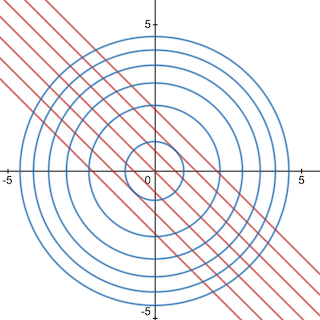
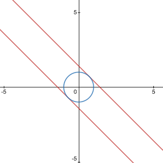

The Lagrangian is used to directly solve constrained optimization problems by re-formulating them as unconstrained optimization problems instead. We'll start with using Lagrange multipliers to solve these problems, then unify the steps of that process into the Lagrangian expression that'll be easier for computers to handle.
Consider the following problem: \[ \text{maximize} \; f(x,y) = x + y \\ \text{subject to} \; x^2 + y^2 = 1 \] Below I've included some contour plots of this problem and its solution. The blue contours represent the function \(x^2 + y^2\), with the innermost circle being \(x^2 + y^2 = 1\). The red contours represent the function \(x + y\).
If you think about the problem enough and how numbers on the unit circle work, you may be able to reason that the optimal \((x,y)\) solution for this problem lies at \((\frac{1}{\sqrt{2}}, \frac{1}{\sqrt{2}})\). That's actually true, and I've graphed the contour lines for both the minimum and maximum of this problem below. You can see that the contours lines pass through \((\frac{-1}{\sqrt{2}}, \frac{-1}{\sqrt{2}})\) and \((\frac{1}{\sqrt{2}}, \frac{1}{\sqrt{2}})\). To convince yourself that this is the answer, I'd recommend plugging in a few other values for \((x,y)\) that are on the unit circle near \((\frac{1}{\sqrt{2}}, \frac{1}{\sqrt{2}})\) to see that they all produce lower results.
To gain intuition about how we can solve this problem analytically, it's helpful to look at that solution image again. Notice how the contour lines are tangent to each other. It's no coincidence that both the minimum and maximum of this problem have contour lines tangent to the constraint. This will actually happen for any extreme along our constraint. To actually use this fact to help us solve this problem analytically, we'll rephrase our observation slightly: the gradients of the objective function and the constraint function are proportional at the solution.
Now we can form a system of equations to help us solve our problem. We'll start with \[ \nabla f(x,y) = \lambda \nabla g(x, y) \] where \(g\) is the left hand side of the constraint equation and \(\lambda\) is some proportionality coefficient that we'll call the "Lagrange multiplier." We can expand this out using the objective and constraint from our example problem to get \[ \begin{align*} \nabla (x + y) &= \lambda \nabla (x^2 + y^2) \\ \begin{bmatrix} 1 \\ 1 \end{bmatrix} &= \lambda \begin{bmatrix} 2x \\ 2y \end{bmatrix} \end{align*} \] To solve this system of equations, we'll need the third equation \(x^2 + y^2 = 1\), which was given in the problem definition. Once we solve the system, though, we get the answers \((\frac{-1}{\sqrt{2}}, \frac{-1}{\sqrt{2}})\) and \((\frac{1}{\sqrt{2}}, \frac{1}{\sqrt{2}})\). Plugging these \((x,y)\) pairs into our objective shows us that the latter is the greater value and thus the maximum answer we're looking for.
This method allows us to solve constrained optimization problems pretty easily, but this is a hard process for a computer to replicate. We want to make it easier on our machine friends, so we'll take our system of equations and shove all the necessary information from it into one nice unified expression that we'll call the Lagrangian. I've written it out below \[ \mathcal{L}(x,y,\lambda) = f(x,y) - \lambda(g(x,y) - b) \] where \(b\) is the value that our constraint is equal to (in our example problem, this would be 1). To perform the same operations as we would with the Lagrange multiplier method, we simply set the gradient of \(\mathcal{L}\) to 0 (as we would in a basic unconstrained optimization problem) and solve for the variables it's defined in terms of \[ \begin{align*} \nabla \mathcal{L} &= 0 \\ \begin{bmatrix} \frac{\partial \mathcal{L}}{\partial x} \\ \frac{\partial \mathcal{L}}{\partial y} \\ \frac{\partial \mathcal{L}}{\partial \lambda} \end{bmatrix} &= \begin{bmatrix} 0 \\ 0 \\ 0 \end{bmatrix} \\ \begin{bmatrix} \frac{\partial f}{\partial x} - \lambda\frac{\partial g}{\partial x} \\ \frac{\partial f}{\partial y} - \lambda\frac{\partial g}{\partial y} \\ -g(x,y) + b \end{bmatrix} &= \begin{bmatrix} 0 \\ 0 \\ 0 \end{bmatrix} \\ \begin{bmatrix} \frac{\partial f}{\partial x} \\ \frac{\partial f}{\partial y} \\ g(x,y) \end{bmatrix} &= \begin{bmatrix} \lambda\frac{\partial g}{\partial x} \\ \lambda\frac{\partial g}{\partial y} \\ b \end{bmatrix} \\ \end{align*} \] This final system of equations is exactly the same as the one we manually constructed earlier. This means that whenever we run into a problem of the form \[ \text{maximize/minimize} \; f(x,y,...) \\ \text{subject to} \; g(x,y,...) = b \] we can simply construct the Lagrangian and then use some software to efficiently solve the unconstrained optimization problem that follows.